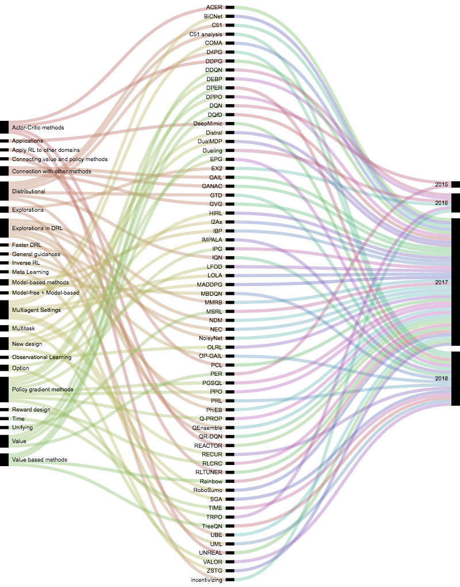
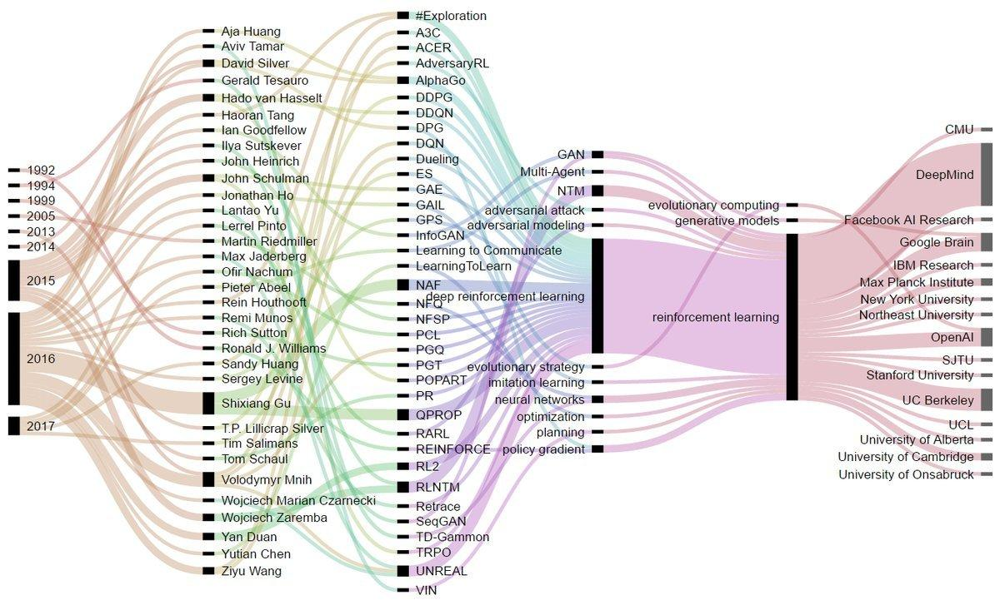

Awesome Deep Reinforcement Learning
Awesome Deep Reinforcement Learning
Follow awesome-deep-rl on Github
Ask questions on Github
updated Landscape of DRL

Landscape of DRL

This project is built for people who are learning and researching on latest deep reinforcement learning methods.
Illustrations:

Recommendations and suggestions are welcome.
General guidances
Foundations and theory
General Benchmark Testing Frameworks
Value based methods
Policy gradient methods
Explorations in DRL
Actor-Critic methods
Model-based methods
Model-free + Model-based
Hierarchical
Option
Connection with other methods
Connecting value and policy methods
Reward design
Unifying
Faster DRL
Apply RL to other domains
Multiagent Settings
New design
Multitask
Observational Learning
Distributional
Planning
Safety
Inverse RL
No reward RL
Time
Applications
Adversarial learning
Use Natural Language
Generative and contrastive representation learning
Belief
PAC